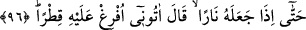

hayvanlar gibi çiftleşirler. Ellerinde pençeleri, yırtıcı hayvanların azı dişleri gibi azı
dişleri vardır. Yine develerin boyunlarındaki çanın hareketinin sesi gibi ses çıkaran
köpek dişleri vardır. Uğradıkları fil, vahşi hayvan, hınzır ve benzeri her şeyi yerler.
Kendi ölülerini de yerler. Haşerât, yılan, akreb de onların yiyecekleridir.
Hayâtü’l-hayevân’da der ki: “, bir çeşit yılandır. Bilinen yılanların en büyüğüdür.
Ağzında mızrağın demir ucu gibi köpek dişleri vardır ve bunlar uzun hurma ağacı
gibidir. Gözleri kan renginde kırmızı, ağzı ve karnı geniş, gözleri şimşek gibi çakar,
hayvanlardan çoğunu yutar, kara ve denizde bir çok hayvan ondan korkar. Hareket
ettiğinde kuvvetinin şiddetinden dolayı deniz dalgalanır. İlk işi kara hayvanlarından
gördüklerini yemektir. Fesâdı çoğalınca bir melek onu alıp denize atar. Kara
hayvanlarına yaptığını deniz hayvanlarına da yapar. Vûcudu büyür, öyle ki başı bir tepe
kadar olur. Sonunda Allah bir melek gönderir, onu yüklenip Ye’cûc ve Me’cûc’e atar.”
Kısasu’l-enbiyâ’da şöyle der: “Bu hayvan onlara atıldığında onlar için bolluk, aksi
halde kıtlık olur.”
“Bizimle onlar arasında” onların oradan çıkıp bize ulaşmalarını engelleyen “bir sed
yapman için sana bir vergi verelim mi?” Yâni sana malımızdan bir ücret verelim mi?
95. Dedi ki: “Rabbimin beni içinde bulundurduğu nimet ve kudret daha hayırlıdır.
Siz bana kuvvetinizle destek olun da, sizinle onlar arasına aşılmaz bir engel
yapayım.”
Zülkarneyn “Dedi ki: “Rabbimin beni içinde bulundurduğu nimet ve kudret” yâni
bana güç ve imkan olarak verdiği mal, mülk ve diğer sebepler, sizin vermek istediğiniz
ücretten “daha hayırlıdır.” Benim ona ihtiyacım yoktur. Bu söz, Süleyman (a.s.)’ın
“Allah’ın bana verdiği, sizin verdiğinizden daha hayırlıdır.” (en-Neml, 27/36)
sözüne benzer.
“Siz bana kuvvetinizle” binânın yapılması için gerekli olan âlet ve malzemelerle
binâyı ve çalışmayı güzel yapan işçi ve ustalarla “destek olun da, sizinle onlar arasına
aşılmaz bir engel” bâzısı bâzısı üzerine terkib edilmiş kalın ve büyük bir sed
“yapayım.” Yapılan bu sed normal sedden daha büyük ve kuvvetlidir. Bu ise onların
umduklarının da üstünde isteklerinin yerine getirilmesi ve gerçekleştirilmesidir.